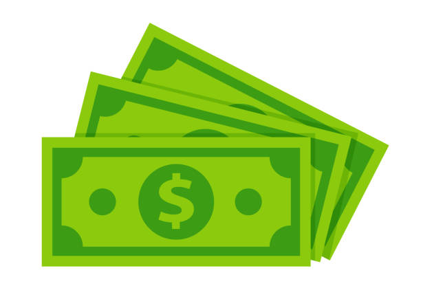

Blog Post 1
In my first blog post, I would like to talk about and give my top five side hustles that anyone can try out!
1. Food Delivery - One of the easiest, most accessible, and flexible jobs. Drive your own car to deliver food around your city. If you don't have a car, biking is always an option, especially if you live in a bigger city!
2. Rent your space/possessions - Renting out your car or room is a great option. If you aren't using things you own, giving people the option to rent it out on sites likes airbnb is perfect.
3. Pet Sitting - Walk around your neighborhood and find some pets that need to be cared for while a family is out for vacation. Easily the most enjoyable side hustle on the list as you get to spend time with animals, and who doesn't like that?
4. Mow Lawns/Yard Work - Caring for a yard is some of the most tedious work and house owners are always looking to pay others to get it done for them. Mowing a lawn and getting a quick $15 can absolutely be worth it, plus it gets you in contact with neighbors that may need other help around the house!
5. Selling Baked Goods - Baking is easier than ever as you can find an infinite amount of recipes online if you don't have your own. Bake some muffins, bread, or brownies for example and find a place to sell them.
